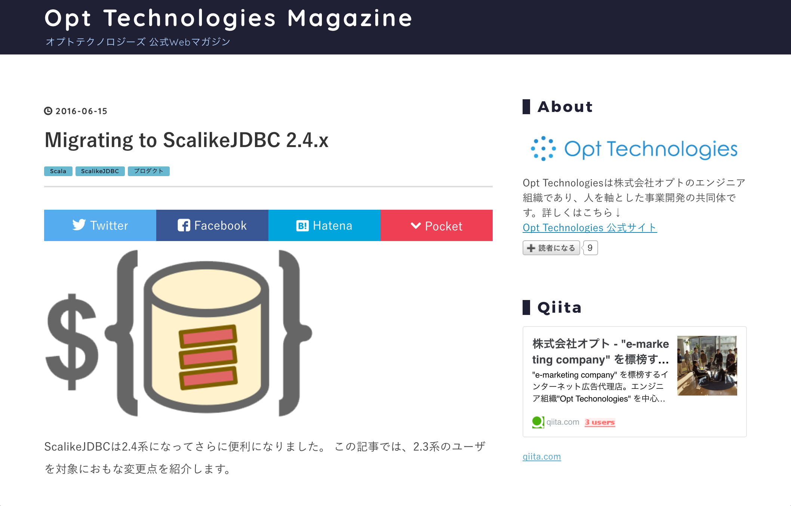

# Introduction to ScalikeJDBC ### Haruki Okada @ Scalamatsuri 2017 --- ## Who am I - Haruki Okada - Scala developer at Opt, Inc. - twitter, github : @ocadaruma - OSS - [ocadaruma/sbt-youtube](https://github.com/ocadaruma/sbt-youtube) - [opt-tech/chronoscala](https://github.com/opt-tech/chronoscala) - [opt-tech/redshift-fake-driver](https://github.com/opt-tech/redshift-fake-driver) <div class="translation"> 自己紹介: 株式会社オプトの岡田です。 </div> --- ## Database Access Libraries ? - Slick - doobie - quill - **ScalikeJDBC** ### ScalikeJDBC #### Features - Typesafe DSL to build SQL - Execute SQL via JDBC - Play Framework integration - And so on <div class="translation"> DBライブラリは色々ありますが、ScalikeJDBCをご紹介します。 </div> --- ### ScalikeJDBC #### Pros - Easy to learn - Predictable SQL generation - **Flexibility to build complex queries** - Example: OLAP queries for reporting #### Cons - Less abstraction - However, I think it's not a problem in most cases. <div class="translation"> ScalikeJDBCは学習コストが低く、柔軟性が高いのが利点です。 </div> --- ## ScalikeJDBC at Opt, Inc. - We adopt ScalikeJDBC for most Scala projects. - cf. http://tech-magazine.opt.ne.jp/entry/2016/06/15/205650  <div class="translation"> オプトではほとんどのScalaプロジェクトでScalikeJDBCを採用しています。 </div> --- ## Agenda - Step-by-step introduction to ScalikeJDBC ### Disclaimer #### What I'm not going to talk - Other statement than SELECT (INSERT, UPDATE, DELETE, DDLs, ...) - Other features than SQL building/execution - e.g. Play integration, scalikejdbc-streams <div class="translation"> 今日はSELECTクエリに対象を絞り、ScalikeJDBCに入門していきます。 </div> --- ## First of all - There are good official documentations / tutorials - http://scalikejdbc.org/ - https://github.com/scalikejdbc/scalikejdbc-cookbook <div class="translation"> ぶっちゃけ公式のドキュメントがとても良いです。 </div> --- ## 0. Setup dependencies Add following lines to your `build.sbt`. ```scala libraryDependencies ++= Seq( "org.scalikejdbc" %% "scalikejdbc" % "3.0.0-RC2", // for convenience "org.scalikejdbc" %% "scalikejdbc-interpolation-macro" % "3.0.0-RC2", "org.scalikejdbc" %% "scalikejdbc-syntax-support-macro" % "3.0.0-RC2", "org.scalikejdbc" %% "scalikejdbc-config" % "3.0.0-RC2", // any jdbc driver "com.h2database" % "h2" % "1.4.193", "org.postgresql" % "postgresql" % "9.4.1212", // any slf4j-supported logging library "ch.qos.logback" % "logback-classic" % "1.1.8" ) ``` <div class="translation"> sbt依存性はこの通り。 </div> --- ## 1. SQLSyntax - `SQLSyntax` is a basic element to build SQL. - `value` holds statement with placeholders - `parameters` holds parameters correspond to placeholders Example: ```scala import scalikejdbc._ val yearColumn = sqls"year" val year = 2017 val syntax = sqls"select * from scalamatsuri where ${yearColumn} = ${year}" ``` `syntax.value` ・・・ `"select * from scalamatsuri where year = ?"` `syntax.parameters` ・・・ `List(2017)` <div class="translation"> SQLSyntaxで、プレースホルダ付きの文とパラメータを分けて保持します。 </div> --- ### SQLSyntax #### parameters to `sqls` interpolation are embedded by following rules: 1. If parameter is `SQLSyntax`, embedded to `value` directly. 2. Otherwise, a placeholder is inserted into parameter's position and parameter is added to `parameters`. - As an exception, if parameter is Seq(x1, x2, x3), it is expanded to value:"?, ?, ?", parameters = Seq(x1, x2, x3). #### Summary - Now you can create arbitrary PreparedStatement-ready SQL. <div class="translation"> これでほぼPreparedStatementを発行する準備は整いました。 </div> --- ## 2. Configure connection pool / Borrow connection - There are several ways to configure connection pools in ScalikeJDBC. - Here, we use `application.conf` ### /path/to/your-project/src/main/resources/application.conf ``` db.default.driver="org.h2.Driver" db.default.url="jdbc:h2:file:./db/default" db.default.user="sa" db.default.password="" ``` <div class="translation"> 次に、設定ファイルでコネクションプール設定を書きます。 </div> --- ### Configure connection pool / Borrow connection #### Borrow connection ```scala import scalikejdbc._, config._ DBs.setup() // initialize connection pool // borrow connection DB.readOnly { session: DBSession => // do something with readonly session } DB.autoCommit { session: DBSession => // do something with autoCommit session } DB.localTx { session: DBSession => // do something in transaction } ``` --- ### Configure connection pool / Borrow connection #### Summary - Now you can - configure connection pool via `application.conf` - borrow several types of connection. <div class="translation"> コネクションプールの設定方法, コネクションの取得方法を学びました。 </div> --- ## 3. Execute SQL - `SQLSyntax` doesn't have function to execute SQL. - To execute SQL, you can create `SQL`'s instance via `sql` String interpolation. - `sql` interpolation has same embedding rules as `SQLSyntax`. Suppose that there are following table and rows. ```sql create table post( id int primary key, body text not null, posted_at timestamp not null ); insert into post(id, body, posted_at) values (1, 'first post', '2016-01-10T10:00:00'); insert into post(id, body, posted_at) values (2, 'second post', '2016-01-11T10:00:00'); insert into post(id, body, posted_at) values (3, 'third post', '2016-01-12T10:00:00'); ``` <div class="translation"> 以下このようなpostテーブルを例に、SQLを実行する方法を見ていきます。 </div> --- ### Execute SQL ```scala import scalikejdbc._ val ids = Seq(1, 2) DB.readOnly { implicit session => sql"select body from post where id in (${ids})".map { resultSet => resultSet.string("body") }.list.apply() } // => List(first post, second post) ``` --- ### Execute SQL #### at JDBC level (pseudo code): ```scala val conn: java.sql.Connection = ??? // borrow from connection pool val stmt = conn.prepareStatement( "select body from post where id in (?, ?)" ) stmt.setInt(1, 1) stmt.setInt(2, 2) val rs = stmt.executeQuery() while (rs.next()) { // extract... rs.getString("body") } // ... ``` #### Summary - Now you execute arbitrary SQL statement and get result from ResultSet. <div class="translation"> JDBCレベルではこんなノリの処理が行われます。 </div> --- ## 4. SQLSyntaxSupport ### SQLSyntaxSupport provides - Type safe table/column references. - Functions to remove boilerplates. ```scala import org.joda.time.DateTime import scalikejdbc._ case class Post( id: Int, body: String, postedAt: DateTime ) object Post extends SQLSyntaxSupport[Post] { // define alias name of post table val p = this.syntax("p") } ``` <div class="translation"> SQLSyntaxSupportは、typesafeにカラムを参照する機能などを提供します。 </div> --- ### SQLSyntaxSupport ```scala import Post.p val ids = Seq(1, 2) DB.readOnly { implicit session => sql"select ${p.result.*} from ${Post as p} where ${p.id} in (${ids})" .map { rs => Post( id = rs.int(p.resultName.id), body = rs.string(p.resultName.body), postedAt = rs.jodaDateTime(p.resultName.postedAt) ) }.list.apply() } ``` => ``` List( Post(1,first post,2016-01-10T10:00:00.000+09:00), Post(2,second post,2016-01-11T10:00:00.000+09:00) ) ``` --- ### SQLSyntaxSupport #### What is `Post.p` ? `p: QuerySQLSyntaxProvider[SQLSyntaxSupport[Post], Post]` `p` provides type safe table/column references. These are a part of the syntaxes `p` provides. - `p.postedAt` - => `SQLSyntax(value: p.posted_at, parameters: List())` - {tableAliasName}.{column_name} - column_name will be snake_cased by default. - `p.result.postedAt` - => `SQLSyntax(value: p.posted_at as pa_on_p, parameters: List())` - {tableAliasName}.{column_name} as {column_alias} - column_alias is determined automatically. <div class="translation"> Post.pが色々なカラム参照を提供しますので、見ていきましょう。 </div> --- ### SQLSyntaxSupport - `p.resultName.postedAt` - => `SQLSyntax(value: pa_on_p, parameters: List())` - {column_alias} - column_alias is determined automatically. - `p.*` - => `SQLSyntax(value: p.id, p.body, p.posted_at, parameters: List())` - {tableAliasName}.{column_name} for all columns. - `p.resultAll` (same as `p.result.*`) - => `SQLSyntax(value: p.id as i_on_p, p.body as b_on_p, p.posted_at as pa_on_p, parameters: List())` - {tableAliasName}.{column_name} as {column_alias} for all columns - `p.resultName.*` - => `SQLSyntax(value: i_on_p, b_on_p, pa_on_p, parameters: List())` - {column_alias} for all columns - `Post as p` - => `SQLSyntax(value: post p, parameters: List())` - {tableName} {tableAliasName} --- ### SQLSyntaxSupport #### Column reference is checked at compile time. The following code does not compile. ```scala p.foo // => error: Post#foo not found. Expected fields are #id, #body, #postedAt. ``` #### Summary - Now you can refer table and table's columns type safely. <div class="translation"> 存在しないカラムはコンパイルエラーになります。 </div> --- ## 5. Auto Macros ### The following lines in previous example look like boilerplate. ```scala Post( id = rs.int(p.resultName.id), body = rs.string(p.resultName.body), postedAt = rs.jodaDateTime(p.resultName.postedAt) ) ``` <div class="translation"> ResultSetからPostテーブルへのマッピングがboilerplateです。 </div> --- ### Auto Macros #### ScalikeJDBC provides a macro to remove this boilerplate. ```scala object Post extends SQLSyntaxSupport[Post] { val p = this.syntax("p") def apply(rs: WrappedResultSet): Post = autoConstruct(rs, p.resultName) } import Post.p val ids = Seq(1, 2) DB.readOnly { implicit session => sql"select ${p.result.*} from ${Post as p} where ${p.id} in (${ids})" .map(Post(_)).list.apply() } ``` <div class="translation"> autoConstructマクロで自動定義できます。 </div> --- ### Auto Macros #### `autoConstruct` macro defines a method like following: ```scala def apply(rs: WrappedResultSet): Post = new Post( // same as rs.int(p.resultName.id) id = rs.get[Int](p.resultName.field("id")), // same as rs.string(p.resultName.body) body = rs.get[String](p.resultName.field("body")), // same as rs.jodaDateTime(p.resultName.postedAt) postedAt = rs.get[DateTime](p.resultName.field("postedAt")) ) ``` #### Summary - Now you can remove boilerplate by using `autoConstruct` macro. <div class="translation"> マクロはこのようなコードに展開されます。 </div> --- ## 6. QueryDSL - You can refer table and table's columns type safely, but still build SQL by writing string directly. - `ScalikeJDBC` provides DSL to build SQL more type safely. ```scala import scalikejdbc._ // Use Post entity in previous examples. import Post.p val ids = Seq(1, 2) DB.readOnly { implicit session => withSQL { select(p.result.*) .from(Post as p) .where.in(p.id, ids) }.map(Post(_)).list.apply() } ``` <div class="translation"> 今までベタ書きでSQLを組み立てていましたが、DSLも提供されています。 </div> --- ### QueryDSL ```scala // same DB.readOnly { implicit session => withSQL { selectFrom(Post as p) .where.in(p.id, ids) }.map(Post(_)).list.apply() } ``` #### Summary - Now you can build SQL via type safe DSL. <div class="translation"> typesafeなDSLで組み立てられるようになりました。 </div> --- ## 7. TypeBinder / ParameterBinderFactory Suppose that you are using value class for Post.id ```scala case class PostId(value: Int) extends AnyVal case class Post( id: PostId, body: String, timestamp: DateTime ) ``` <div class="translation"> idに値クラスを使うとしましょう。 </div> --- ### TypeBinder #### The following code does not compile. ```scala object Post extends SQLSyntaxSupport[Post] { val p = this.syntax("p") def apply(rs: WrappedResultSet): Post = autoConstruct(rs, p.resultName) } ``` You will see ``` could not find implicit value for evidence parameter of type scalikejdbc.TypeBinder[PostId] def apply(rs: WrappedResultSet): Post = autoConstruct(rs, p.resultName) ^ ``` <div class="translation"> 今までと同じコードだとコンパイルが通りません。 </div> --- ### TypeBinder - Compilation fails because ScalikeJDBC doesn't know how to instantiate `PostId` from `int` column value. - `TypeBinder` instance has to be located to `implicit` search scope. - `TypeBinder` is an type class. ```scala object Post extends SQLSyntaxSupport[Post] { implicit val postIdTypeBinder = TypeBinder.int.map(PostId) val p = this.syntax("p") def apply(rs: WrappedResultSet): Post = autoConstruct(rs, p.resultName) } ``` <div class="translation"> TypeBidnerの型クラスインスタンスが必要です。 </div> --- ### ParameterBinderFactory #### Still following code does not compile. ```scala val ids = Seq(PostId(1), PostId(2)) DB.readOnly { implicit session => withSQL { selectFrom(Post as p) .where.in(p.id, ids) }.map(Post(_)).list.apply() } ``` You will see ``` Implicit ParameterBinderFactory[PostId] is missing. You need to define ParameterBinderFactory for the type or use AsIsParameterBinder. ``` <div class="translation"> PreparedStatementへのバインドについても同様です。 </div> --- ### ParameterBinderFactory - Compilation fails because ScalikeJDBC doesn't know how to set `PostId` to PreparedStatement. - `ParameterBinderFactory` instance has to be located to `implicit` search scope. - `ParameterBinderFactory` is an type class too. ```scala object Post extends SQLSyntaxSupport[Post] { implicit val postIdTypeBinder = TypeBinder.int.map(PostId) implicit val postIdParameterBinderFactory = ParameterBinderFactory .intParameterBinderFactory.contramap[PostId](_.value) val p = this.syntax("p") def apply(rs: WrappedResultSet): Post = autoConstruct(rs, p.resultName) } ``` <div class="translation"> ParameterBinderFactoryの型クラスインスタンスが必要です。 </div> --- ### TypeBinder / ParameterBinderFactory #### You can define both `TypeBidner` and `ParameterBinderFactory` at once. ```scala object Post extends SQLSyntaxSupport[Post] { implicit val postIdBinders = Binders.int.xmap(PostId.apply, _.value) val p = this.syntax("p") def apply(rs: WrappedResultSet): Post = autoConstruct(rs, p.resultName) } ``` #### Summary - Now you can use arbitrary types with ScalikeJDBC. ##### Attention - Since `ParameterBinderFactory` does not affect to String interpolation, following code compiles but does not work properly. ```scala sql"select ${p.result.*} from ${Post as p} where ${p.id} in (${ids})" ``` <div class="translation"> String interpolationではParameterBinderFactoryが効かないので注意。 </div> --- ## 8. OneToMany `OneToMany` syntax provides useful feature for `1 : N` join queries. Suppose that there are following table and rows in addition to `post` table. Relation between `post` : `tag` is 1 : N (>= 0) ```sql create table tag( id int primary key, post_id int not null, name text not null ); insert into tag(id, post_id, name) values (1, 1, 'java'); insert into tag(id, post_id, name) values (2, 1, 'scala'); insert into tag(id, post_id, name) values (3, 3, 'ruby'); insert into tag(id, post_id, name) values (4, 3, 'python'); insert into tag(id, post_id, name) values (5, 3, 'perl'); ``` <div class="translation"> OneToManyを使うとjoinの結果を便利にマッピングできます。 </div> --- ### OneToMany ```scala import scalikejdbc._ case class TagId(value: Int) extends AnyVal case class Tag( id: TagId, postId: PostId, name: String ) object Tag extends SQLSyntaxSupport[Tag] { import Post.postIdBinders implicit val tagIdBinders = Binders.int.xmap(TagId.apply, _.value) val t = this.syntax("t") def apply(rs: WrappedResultSet): Tag = autoConstruct(rs, t.resultName) // if PKey of tag table exists in ResultSet, Some(Tag) otherwise None. // typical usage is to extract Tag from outer join queries. def opt(rs: WrappedResultSet): Option[Tag] = rs.intOpt(t.resultName.id).map(_ => apply(rs)) } ``` --- ### OneToMany ```scala case class PostWithTags( post: Post, tags: Seq[Tag] ) import Post.p, Tag.t val ids = Seq(PostId(1), PostId(2)) DB.readOnly { implicit session => withSQL { selectFrom(Post as p) .leftJoin(Tag as t) .on(p.id, t.postId) .where.in(p.id, ids) } .one(Post) .toMany(Tag.opt) .map(PostWithTags) .list .apply() } ``` --- ### OneToMany result: ``` List( PostWithTags( Post(PostId(1),first post,2016-01-10T10:00:00.000+09:00), Vector(Tag(TagId(1),PostId(1),java), Tag(TagId(2),PostId(1),scala)) ), PostWithTags( Post(PostId(2),second post,2016-01-11T10:00:00.000+09:00), List() ) ) ``` - ScalikeJDBC automatically aggregates Tags related to the same `Post` in the ResultSet. - Equality of Posts is based on `equals` method by default. - You can change this behavior by extending `EntityEquality`. #### Summary - Now you can retrieve results from join queries easily. <div class="translation"> 親テーブルのequalsを使って、親テーブルが一緒な子テーブルをまとめます。 </div> --- ## 9. SubQueries Sometimes you might write SQL containing subqueries. For example, pagination with join. If you want to paginate `post left join tag` by 2 posts, you will write SQL like following. ```sql select subp.id, subp.body, subp.posted_at, tag.id, tag.post_id, tag.name from (select id, body, posted_at from post where id in (1, 2, 3) limit 2 offset 0 ) subp left join tag on subp.id = tag.post_id; ``` <div class="translation"> joinしつつpaginationしたい場合などに、サブクエリを書くと思います。 </div> --- ### SubQueries ScalikeJDBC provides syntax to build subqueries type safely. ```scala object Post extends SQLSyntaxSupport[Post] { implicit val postIdTypeBinder = TypeBinder.int.map(PostId) val p = this.syntax("p") def apply(rs: WrappedResultSet): Post = autoConstruct(rs, p.resultName) // subquery syntax generates different alias name than p.resultName // use this overload to extract Post with arbitrary ResultName provider. def apply(rs: WrappedResultSet, rn: ResultName[Post]): Post = autoConstruct(rs, rn) } ``` <div class="translation"> サブクエリについてもsyntaxが提供されています。 </div> --- ### SubQueries ```scala import Post.p, Tag.t val sub = SubQuery.syntax("sub").include(p) val ids = Seq(PostId(1), PostId(2), PostId(3)) val (limit, offset) = (2, 0) DB.readOnly { implicit session => withSQL { select(sub.result.*, t.result.*).from( selectFrom(Post as p) .where.in(p.id, ids) .limit(limit).offset(offset) .as(sub) ) .leftJoin(Tag as t) .on(sub(p).id, t.postId) } .one(Post(_, sub(p).resultName)) .toMany(Tag.opt) .map(PostWithTags(_, _)).list.apply() } ``` --- ### SubQueries #### Summary - Now you can build SQL containing subquery by type safe DSL. <div class="translation"> サブクエリを含んだSQLについても、typesafeに組み立てられるようになりました。 </div> --- ## 10. Extend SQLSyntax (Window Functions) Basically, ScalikeJDBC provides DBMS-independent syntaxes. Sometimes you might use DBMS-specific features like MySQL's bulk insertion or Postgresql's OLAP functions. You can extend DSL by defining your own syntax. Here, let's define syntax for window functions. (Examples in this section do not work with H2, MySQL. Use Postgresql) <div class="translation"> SQLSyntaxを拡張してWindow関数を定義してみましょう。 </div> --- ### Extend SQLSyntax ```scala import scalikejdbc._ package object extension { implicit class SQLSyntaxExtension(val self: SQLSyntax) extends AnyVal { def over(window: SQLSyntax): SQLSyntax = self.append( sqls"over${sqls.roundBracket(window)}" ) def as(columnAlias: SQLSyntax): SQLSyntax = self.append( sqls"as ${columnAlias}" ) } object sqlsEx { val rank: SQLSyntax = sqls"rank()" } } ``` --- ### Extend SQLSyntax Once you've extended SQLSyntax, you can build SQL containing rank() function as follows: ```scala case class PostWithRank( post: Post, latestPostRank: Int ) import extension._, sqlsEx.rank, sqls.orderBy, Post.p val rankAlias = sqls"rnk" DB.readOnly { implicit session => withSQL { select( p.result.*, rank.over(orderBy(p.postedAt.desc)).as(rankAlias) ).from(Post as p) }.map { rs => PostWithRank( Post(rs), rs.int(rankAlias) ) }.list.apply() } ``` <div class="translation"> rank関数をDSLで使えるようになりました。 </div> --- ### Extend SQLSyntax The code generates SQL like following: ```sql select p.id, p.body, p.posted_at, rank() over (order by p.posted_at desc) as rnk from post p ``` #### Summary - Now you can define your own SQLSyntax. <div class="translation"> 手軽に独自のSQLSyntaxを定義できました。 </div> --- ## Conclusion ### As we have seen, - ScalikeJDBC provides flexisible, type safe and boilerplate-free APIs to build SQL. - ScalikeJDBC's design is simple and clear. ## Let's enjoy ScalikeJDBC ! <div class="translation"> ScalikeJDBCはわかりやすくて柔軟性/拡張性に優れています。使ってみてください！ </div>